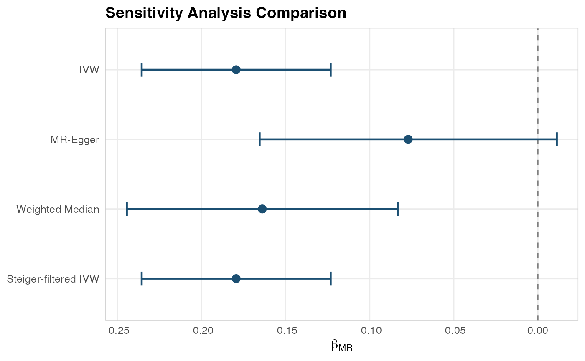

IL-6 Signaling and Colorectal Cancer: A Complete MR Walkthrough
ColorectalCancerIL6Example.RmdScientific Background
Interleukin-6 (IL-6) is a pleiotropic cytokine involved in inflammation, immune regulation, and hematopoiesis. Elevated IL-6 levels have been associated with colorectal cancer risk in observational studies, but these associations may be confounded by lifestyle factors, adiposity, or reverse causation (cancer causing inflammation rather than vice versa).
Mendelian Randomization can address this question: Does genetically proxied IL-6 signaling causally affect colorectal cancer risk?
The IL-6 receptor (IL6R) gene region on chromosome 1q21 contains well-characterized variants (notably rs2228145/Asp358Ala) that alter IL-6 signaling. These serve as strong genetic instruments for MR analysis.
Step 1: Instrument Assembly
In a real analysis, you would query OpenGWAS:
library(Medusa)
# Query OpenGWAS for IL-6 receptor GWAS
instruments <- getMRInstruments(
exposureTraitId = "ieu-a-1119", # IL-6 receptor levels
pThreshold = 5e-8,
r2Threshold = 0.001,
kb = 10000,
ancestryPopulation = "EUR"
)For this vignette, we create instruments from known IL6R-region SNPs:
library(Medusa)
instruments <- createInstrumentTable(
snpId = c("rs2228145", "rs4129267", "rs7529229", "rs4845625",
"rs6689306", "rs12118721", "rs4453032"),
effectAllele = c("C", "T", "T", "T", "G", "T", "A"),
otherAllele = c("A", "C", "C", "C", "A", "C", "G"),
betaZX = c(0.35, 0.31, 0.28, 0.22, 0.18, 0.15, 0.12),
seZX = c(0.015, 0.016, 0.017, 0.018, 0.020, 0.022, 0.025),
pvalZX = c(1e-100, 1e-80, 1e-60, 1e-30, 1e-18, 1e-10, 1e-6),
eaf = c(0.39, 0.37, 0.35, 0.42, 0.28, 0.31, 0.22),
geneRegion = rep("IL6R", 7)
)
cat(sprintf("Assembled %d instruments from the IL6R region.\n", nrow(instruments)))
#> Assembled 7 instruments from the IL6R region.
cat(sprintf("F-statistics range: %.0f to %.0f\n",
min(instruments$fStatistic), max(instruments$fStatistic)))
#> F-statistics range: 23 to 544Step 2: Outcome Cohort Definition
In OMOP CDM, incident colorectal cancer would typically be defined using:
- SNOMED concepts: Malignant neoplasm of colon (concept ID 4089661), Malignant neoplasm of rectum (concept ID 4180790)
- ICD-10-CM: C18.x (colon), C19 (rectosigmoid junction), C20 (rectum)
- Exclusion criteria: Prior history of any cancer, inflammatory bowel disease
- Washout period: >= 365 days of prior observation
# This would run at each OMOP CDM site
cohort <- buildMRCohort(
connectionDetails = connectionDetails,
cdmDatabaseSchema = "cdm",
cohortDatabaseSchema = "results",
cohortTable = "cohort",
outcomeCohortId = 1234, # Your colorectal cancer cohort ID
instrumentTable = instruments,
genomicLinkageSchema = "genomics",
genomicLinkageTable = "genotype_data",
washoutPeriod = 365,
excludePriorOutcome = TRUE
)Step 3: Simulated Analysis
For this vignette, we use simulated data to demonstrate the full pipeline:
# Simulate data with a modest protective effect (OR ~ 0.85, beta ~ -0.16)
simData <- simulateMRData(
n = 8000,
nSnps = 7,
trueEffect = -0.16,
seed = 2026
)
# Fit outcome model
profile <- fitOutcomeModel(
cohortData = simData$data,
covariateData = NULL,
instrumentTable = simData$instrumentTable,
betaGrid = seq(-2, 2, by = 0.02),
siteId = "site_vignette"
)
#> Fitting outcome model at site 'site_vignette' (3951 cases, 4049 controls)...
#> Site 'site_vignette': beta_ZY_hat = -0.1959 (SE = 0.0934).Step 4: Federated Pooling
Simulating three sites pooling their results:
# Simulate profiles from 3 sites
siteProfiles <- simulateSiteProfiles(
nSites = 3,
betaGrid = seq(-2, 2, by = 0.02),
trueBeta = -0.16,
nPerSite = 5000,
seed = 2026
)
# Pool
combined <- poolLikelihoodProfiles(siteProfiles)
#> Pooling profile likelihoods from 3 site(s)...
#> Pooling complete: 3 sites, 1670 total cases, 13330 total controls.
# Visualize
plotLikelihoodProfile(
combinedProfile = combined,
siteProfileList = siteProfiles,
title = "Profile Likelihood: IL-6 Signaling on Colorectal Cancer"
)
Step 5: MR Estimate
estimate <- computeMREstimate(combined, instruments)
#> MR estimate: beta = -0.6280 (95% CI: -1.2560, 0.0000), p = 6.61e-02
#> Odds ratio: 0.534 (95% CI: 0.285, 1.000)
cat(sprintf("Causal OR for IL-6 signaling on colorectal cancer: %.3f\n",
estimate$oddsRatio))
#> Causal OR for IL-6 signaling on colorectal cancer: 0.534
cat(sprintf("95%% CI: [%.3f, %.3f]\n", estimate$orCiLower, estimate$orCiUpper))
#> 95% CI: [0.285, 1.000]
cat(sprintf("P-value: %.2e\n", estimate$pValue))
#> P-value: 6.61e-02Step 6: Sensitivity Analyses
# Create per-SNP estimates (simulated)
set.seed(2026)
nSnps <- 7
betaZX <- instruments$beta_ZX
perSnp <- data.frame(
snp_id = instruments$snp_id,
beta_ZY = -0.16 * betaZX + rnorm(nSnps, 0, 0.01),
se_ZY = runif(nSnps, 0.015, 0.030),
beta_ZX = betaZX,
se_ZX = instruments$se_ZX
)
sensitivity <- runSensitivityAnalyses(perSnp)
#> Running sensitivity analyses with 7 SNPs...
#> IVW...
#> MR-Egger...
#> Weighted Median...
#> Steiger filtering...
#> Leave-One-Out...
#> Sensitivity analyses complete.
# Summary
print(sensitivity$summary)
#> method beta_MR se_MR ci_lower ci_upper
#> 1 IVW -0.17936295 0.02866996 -0.2355561 -0.12316983
#> 2 MR-Egger -0.07706141 0.04507740 -0.1654131 0.01129030
#> 3 Weighted Median -0.16385222 0.04107488 -0.2443590 -0.08334546
#> 4 Steiger-filtered IVW -0.17936295 0.02866996 -0.2355561 -0.12316983
#> pval
#> 1 3.946536e-10
#> 2 1.480457e-01
#> 3 6.632152e-05
#> 4 3.946536e-10
# Forest plot
plotSensitivityForest(sensitivity)
#> `height` was translated to `width`.
Interpretation for Drug Development
The MR analysis provides genetic evidence regarding the causal role of IL-6 signaling in colorectal cancer risk. Key considerations for translating MR findings to drug development:
Direction of effect: A protective OR < 1 for genetically increased IL-6 signaling would suggest that IL-6 inhibition could increase cancer risk, relevant for anti-IL-6 drug safety monitoring.
Sensitivity analysis concordance: If IVW, MR-Egger, and weighted median estimates agree in direction and significance, this strengthens the causal interpretation.
MR-Egger intercept: A non-significant intercept suggests no evidence of directional pleiotropy, supporting the validity of the MR assumptions.
Comparison to clinical trials: MR estimates represent lifelong genetic differences, while drug effects are time-limited. The direction should agree, but magnitudes may differ.